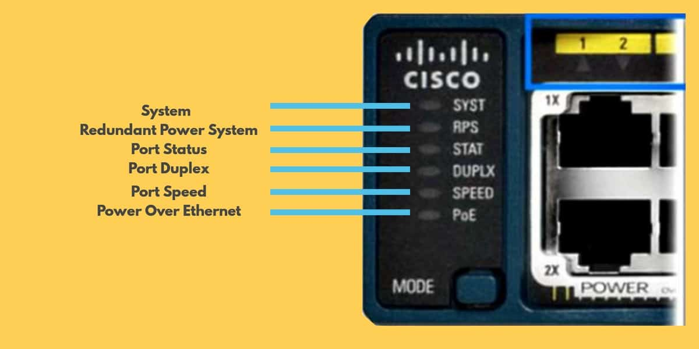
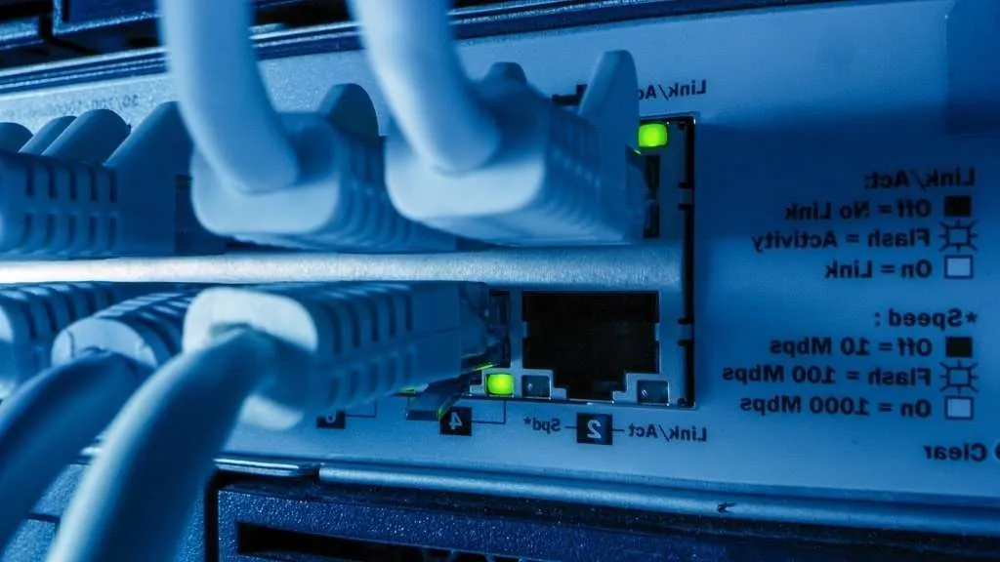
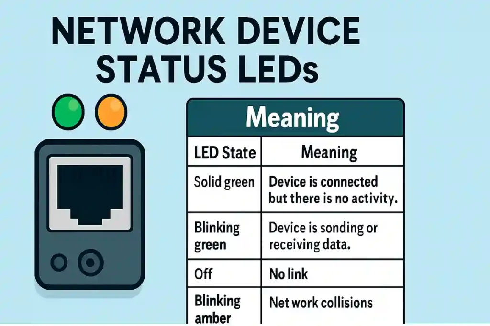
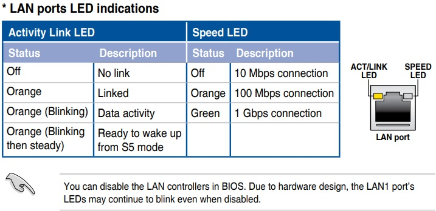
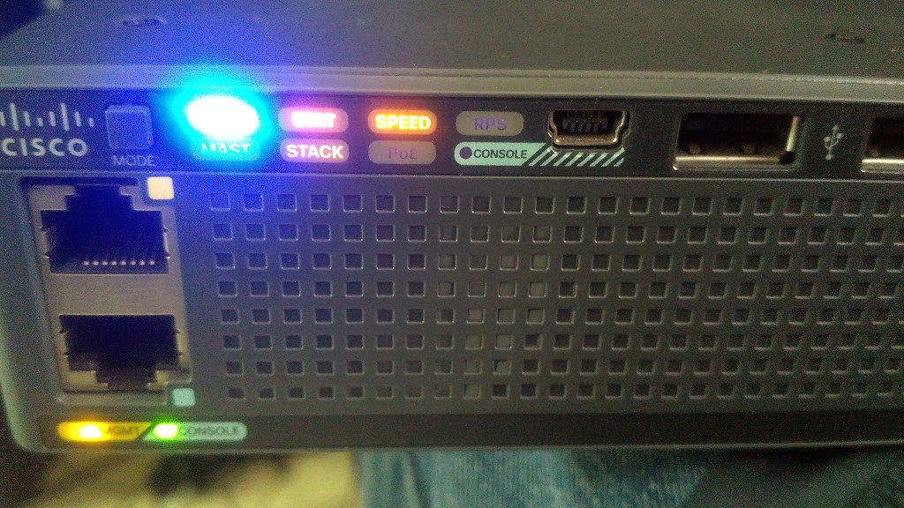
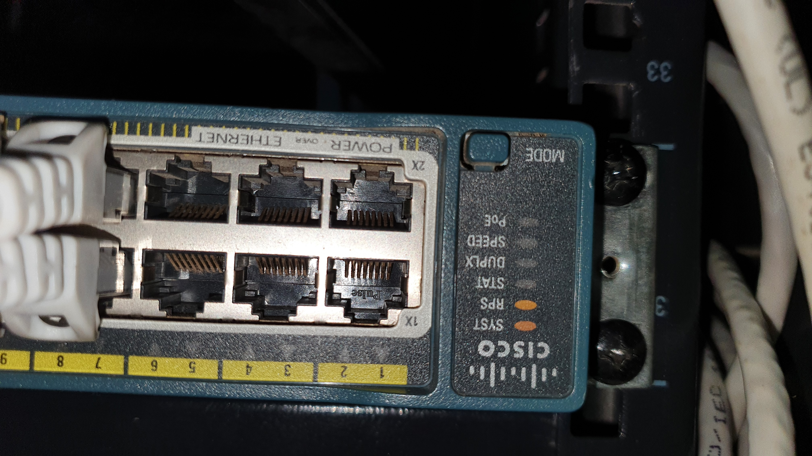
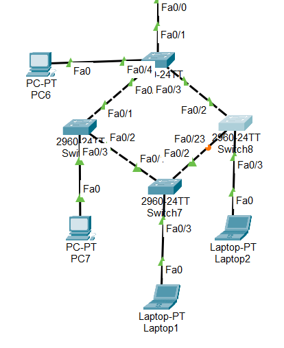
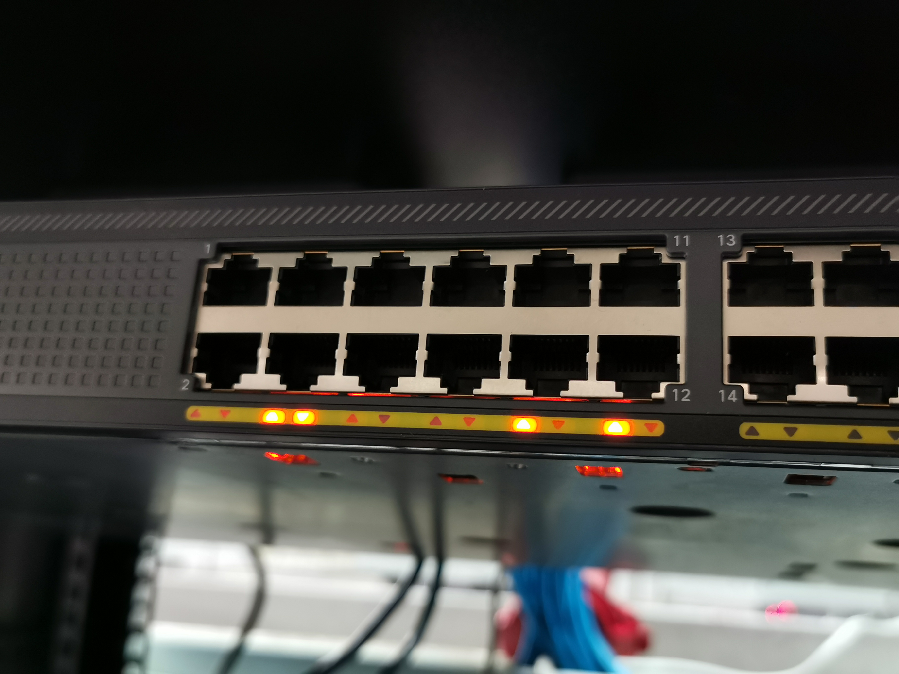
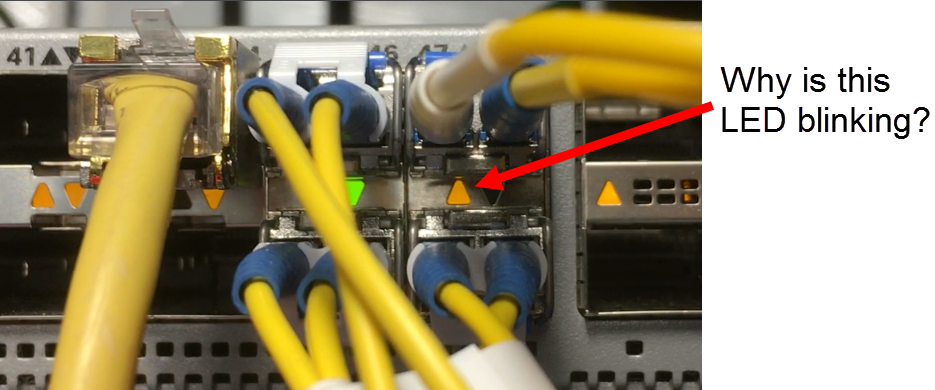
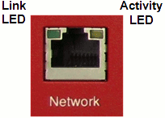

🔌 Cisco Device Status Indicators
Status indicators are LED lights on Cisco routers, switches, and access points that show power status, link connectivity, data activity, and errors or faults. These indicators are widely used in devices from Cisco Systems.
1️⃣ Link Light Color
Link light color is the fastest troubleshooting tool on Cisco network devices. Without using CLI or software, just by observing the LED color, you can identify most physical and basic logical issues.
🔌 What Is a Link Light?
A link light (LED) is a small indicator near the Ethernet port that tells:
- If the cable is connected
- If the port is active
- If the connection is healthy
- If there is an error or block
Found on:
- Switch ports
- Router interfaces
- NIC (Network Interface Cards)
- Wireless access points

🎨 Link Light Colors Explained
🟢 GREEN LIGHT — NORMAL / WORKING
What Green means:
- Physical connection is successful
- Port is enabled
- No error on the link
- Device is ready to communicate
Real-life examples:
- Home router LAN port → Green → Internet works
- Office PC → Switch → Router → All ports green → Network stable
Cisco Packet Tracer example:
- Connect PC to switch
- After a few seconds, LED turns green
- Ping works successfully
Blinking Green = Data transfer happening
🟠 AMBER / ORANGE LIGHT — WAITING / BLOCKED / ISSUE
What Amber means:
- Port is initializing
- Spanning Tree Protocol (STP) is blocking
- Security violation
- Configuration issue
Real-life example:
- New PC plugged into office switch
- Port shows orange for ~30 seconds
- Then turns green
Reason: STP prevents network loops before allowing traffic.
Cisco Packet Tracer example:
- Switch-to-switch connection
- Port turns orange
- After delay → turns green
Actual reason: “STP is working” ✅
Problem scenarios with Amber:
- Wrong VLAN
- Port security violation
- Port not in forwarding state
🔴 RED LIGHT — CRITICAL FAILURE (RARE)
What Red means:
- Serious hardware issue
- Port or device failure
- Power supply problem
Mostly seen in:
- Enterprise routers
- Modular switches
Real-life example:
- Data center switch power LED turns red
- Switch shuts down → Network outage
⚫ NO LIGHT — NO LINK / NO POWER
What No Light means:
- Cable unplugged
- Device powered off
- Port administratively disabled
- Faulty cable or NIC
Real-life example:
- PC not connecting
- Ethernet LED OFF
- Loose cable → Fix cable → Green light appears
Packet Tracer example:
- Cable removed → No LED
- Port shutdown command → No LED
📊 Quick Comparison Table (Exam Ready)
| LED Color | Meaning | Network State |
|---|---|---|
| 🟢 Green | Normal | Working |
| 🟠 Amber | Blocked / Initializing | Check configuration |
| 🔴 Red | Hardware failure | Critical |
| ⚫ Off | No link | Cable / power issue |
✨ Blinking vs Solid States
Understanding blinking vs solid LEDs tells you whether data is flowing or not. This is a core CCST exam topic and extremely useful in real-world troubleshooting on devices from Cisco Systems.
🔌 What Do LED States Mean?
After the link light color confirms the connection (green or amber), the LED behavior (solid or blinking) tells you what the link is doing.
🔵 SOLID LIGHT — LINK PRESENT, NO DATA
- Physical link is up
- Port is ready
- No data is currently passing


Packet Tracer: PC connected but idle → LED stays solid green
✨ BLINKING LIGHT — DATA IS FLOWING
- Data is being transmitted
- Traffic is flowing
- Link is actively used


Packet Tracer: Ping running → LEDs blink continuously
🟢 Solid Green vs Blinking Green
| State | Meaning | Network OK? |
|---|---|---|
| Solid Green | Link present, idle | ✅ Yes |
| Blinking Green | Data transfer | ✅ Yes |
🟠 Amber Blinking vs Solid Amber
🟠 Solid Amber
- Port blocked
- Not forwarding traffic
- Usually due to STP

🟠 Blinking Amber
- Port initializing
- Temporary state
- STP convergence




⚫ OFF vs BLINKING
| LED State | Meaning |
|---|---|
| Off | No link / No power |
| Blinking | Active traffic |
🧠 Real-World Troubleshooting Scenarios
🔧 Internet Slow
LED blinking very fast → Network congestion → Check bandwidth
🔧 Can’t Ping
LED solid green, no blinking → Check IP / firewall
🔧 New Switch Connection
LED blinking amber → Wait for STP convergence
✨ Blinking = Busy
🟠 Amber = Attention
⚫ Off = Offline